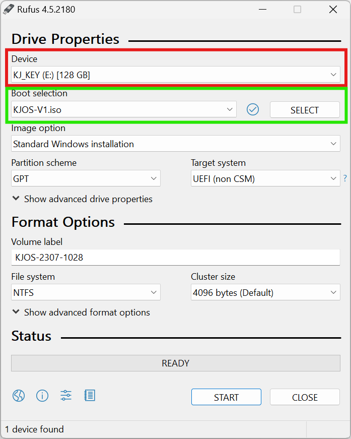
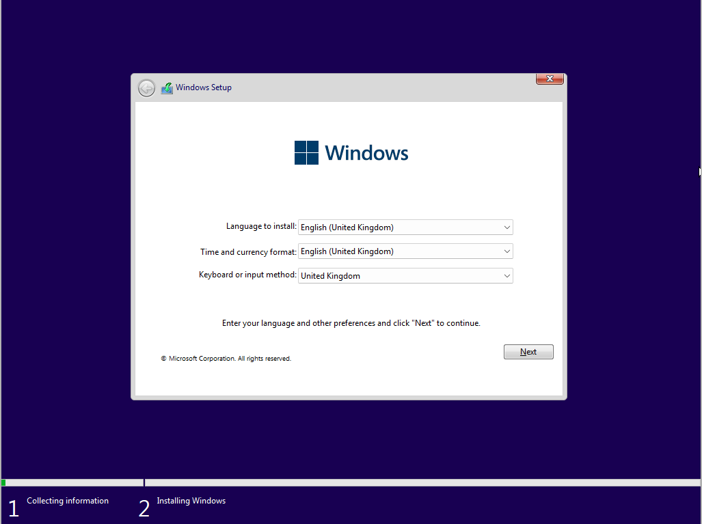
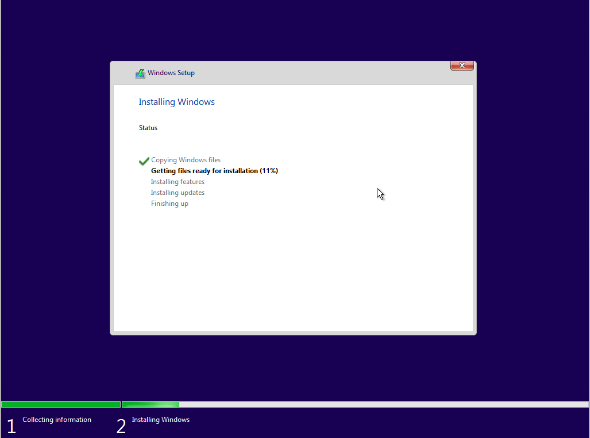

Une fois KJOS téléchargé, installer Rufus afin de créer une clé bootable.
Choisir l'ISO téléchargé et la clé USB où vous souhaitez l'installer. Enfin, cliquer sur DÉMARRER (voir ci-dessous).
Cette clé servira à installer KJOS sur votre SSD.
Une fois la clé bootable créée, redémarrer l'ordinateur et au moment du démarrage, presser de nombreuses fois la touche 'Suppr' pour rentrer dans le BIOS.
Le BIOS nous permet de choisir entre autre où nous souhaitons démarrer l'ordinateur, dans notre cas, sur la clé contenant KJOS.
Pour ce faire il faut trouver le 'Menu Boot' (ou 'Boot Menu' en anglais), les marques de carte mères étant très différentes, il faudra vous renseigner où ce menu se situe dans le BIOS.
Dans ce menu, choisir la clé USB précédemment choisie dans Rufus et confirmer. Il faudra ensuite quitter le BIOS en sauvegardant, l'ordinateur redémarrera sur la clé pour afficher le menu suivant.
Il suffit de cliquer sur suivant, puis choisir le Disque où installer KJOS.
📌 Si vous avez des documents ou éléments sur ce disque que vous souhaitez garder, ils seront écrasés et l'action est irréversible ! Prenez soin de sauvegarder vos documents avant !
📌 Je ne serai pas responsable de la perte de vos données.
Cliquer sur suivant et laisser KJOS s'installer sur le disque.
L'ordinateur va redémarrer de nombreuses fois et peu rester figé pendant quelques secondes, pas d'inquiétude, tout est normal.
Une fois l'installation finie, une page de création de compte local s'affichera.